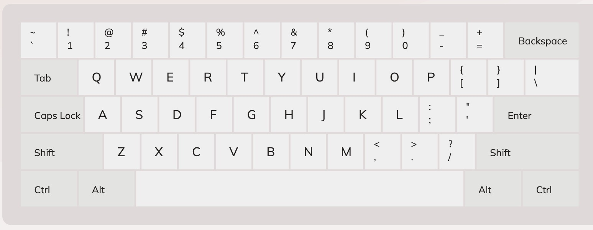
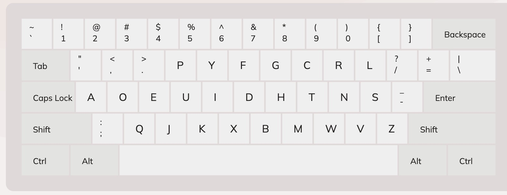
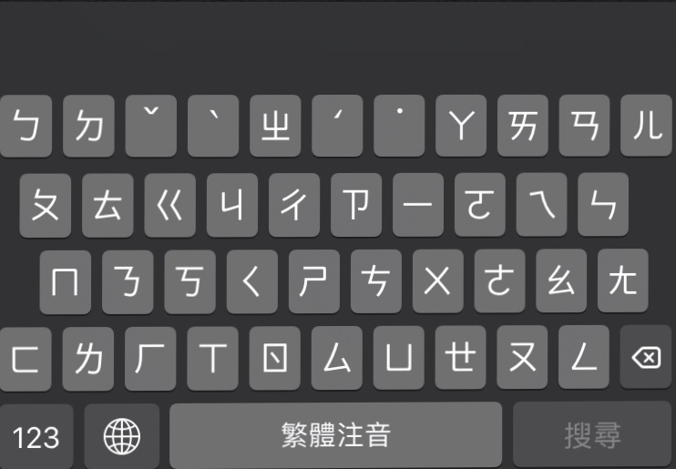
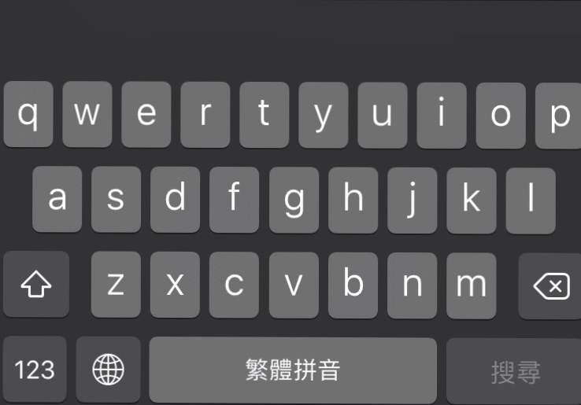

Goal: Dvorak
Qwerty is the most commonly used English typing layout. I am familiar with Qwerty and type comfortably. However, I really want to learn Dvorak because I heard that it's a more relaxing layout for the hands physically. The key placements are designed with the frequency of the keystrokes and better movements for the fingers.
Now, I am also familiar with typing in Chinese. I am most comfortable using Zhuyin (注音輸入法) on computer, but prefer to use Pinyin (漢語拼音) on phones. The reason being Zhuyin have more symbols than alphabets. It adds an extra row that blocks the screen significantly more on a smaller screen. The symbols are squeezed into smaller blocks that makes it harder to press.
Anyways, since Dvorak will not be my second learning input for typing
and I have learned other keyboard input successfully in the past,
Qwerty keyboard layout
Dvorak keyboard layout
Zhuyin keyboard layout
Pinyin keyboard layout
